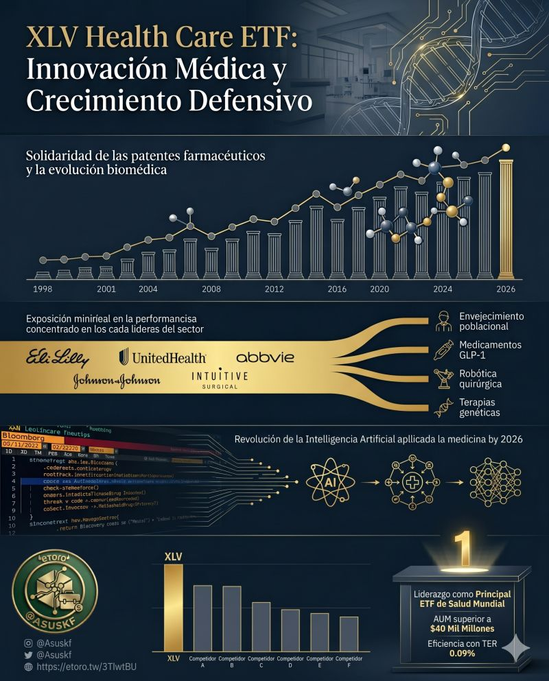

Rendimiento Cuantitativo
Métricas de inversión potenciadas por modelos predictivos e Inteligencia Artificial.
Rendimiento YTD (2026)
—
Superando el benchmark institucional.
▲ Por encima del S&P 500
Precisión de Trading
0%
Operaciones ganadoras verificadas eToro
Movimientos Estratégicos
-
COMPRA RMS.PA Artículos de lujo. Jun 2025
-
COMPRA EXO.NV Innovación tecnológica. Jun 2025
-
COMPRA XLU Infraestructura defensiva. Jun 2025
-
COMPRA RACE.MI Lujo premium. Jun 2025
-
COMPRA CEG Infraestructura energética. Jun 2025
Matriz de Rendimiento Mensual / Anual
| Año | Ene | Feb | Mar | Abr | May | Jun | Jul | Ago | Sep | Oct | Nov | Dic | Total |
|---|
* Rentabilidades netas. Rendimientos pasados no garantizan resultados futuros.

Empresa de la Semana

Análisis fundamental y evaluación cuantitativa del activo destacado.
¿Listo para invertir con una estrategia probada?
Invertir con @Asuskf en eToroLa inversión conlleva riesgos. Sólo invierte lo que puedas permitirte perder.